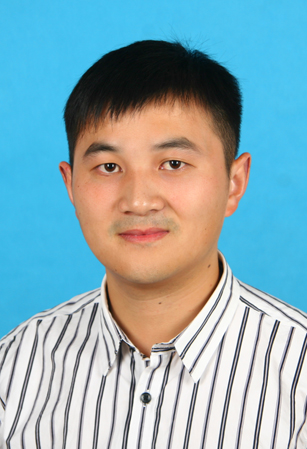
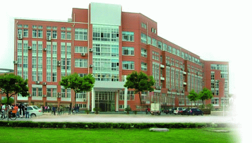

Zhufei Chu, Lecturer, Ningbo Univ.
[Recent News] [About me] [Publications] [Links] [Address]
E-Mail: chuzhufei@nbu.edu.cnPhone:(+86 574)8760-9496
Research Interests:
Logic Synthesis, Physical Design, FPGA Synthesis, Emerging Nanotechnologies

|  |
Zhufei Chu, Lecturer, Ningbo Univ.[Recent News] [About me] [Publications] [Links] [Address]E-Mail: chuzhufei@nbu.edu.cnPhone:(+86 574)8760-9496 Research Interests: Logic Synthesis, Physical Design, FPGA Synthesis, Emerging Nanotechnologies |
|
AddressFenghua Road 818, Jiangbei, Ningbo, 315211Faculty of Electrical Engineering and Computer Science (EECS) Ningbo Univeristy, Zhejiang, China |
|
 |